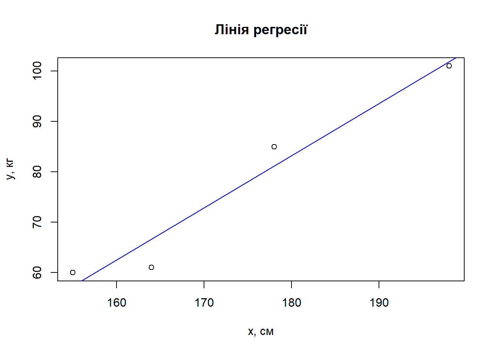
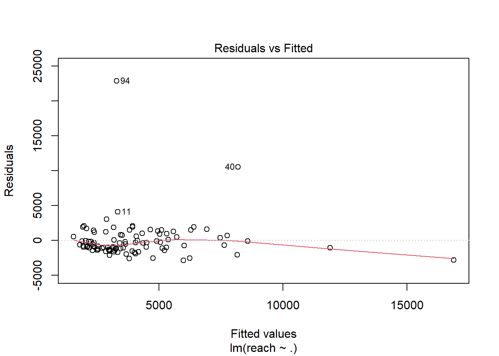
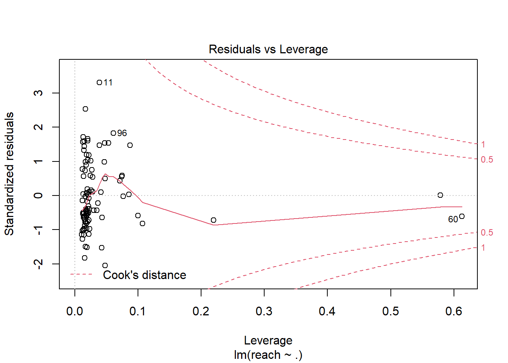
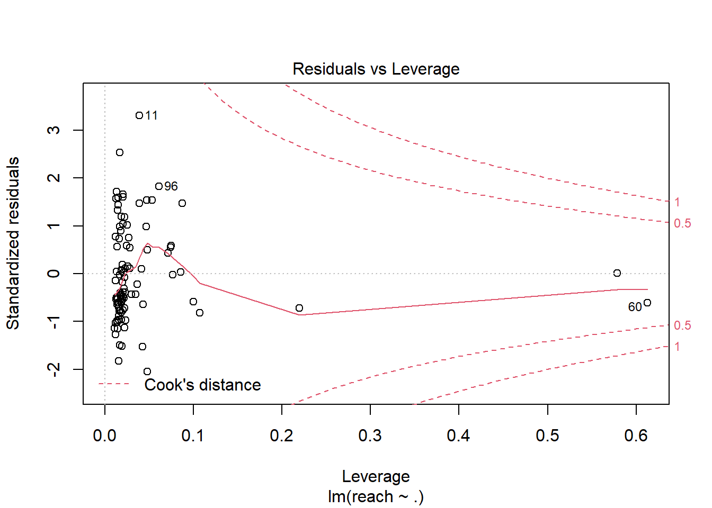
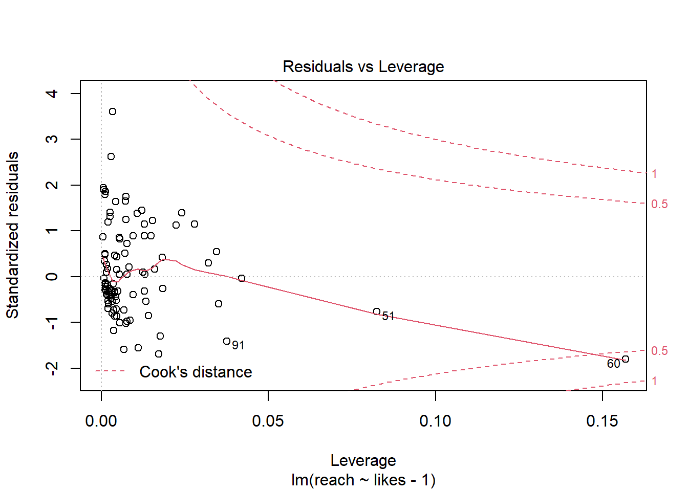
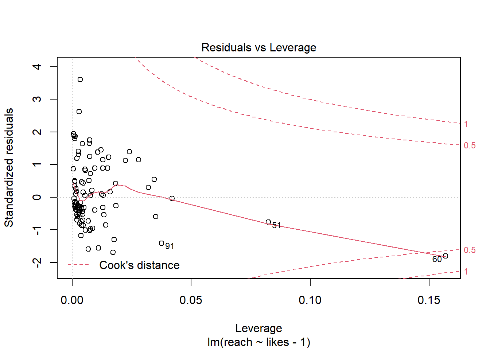
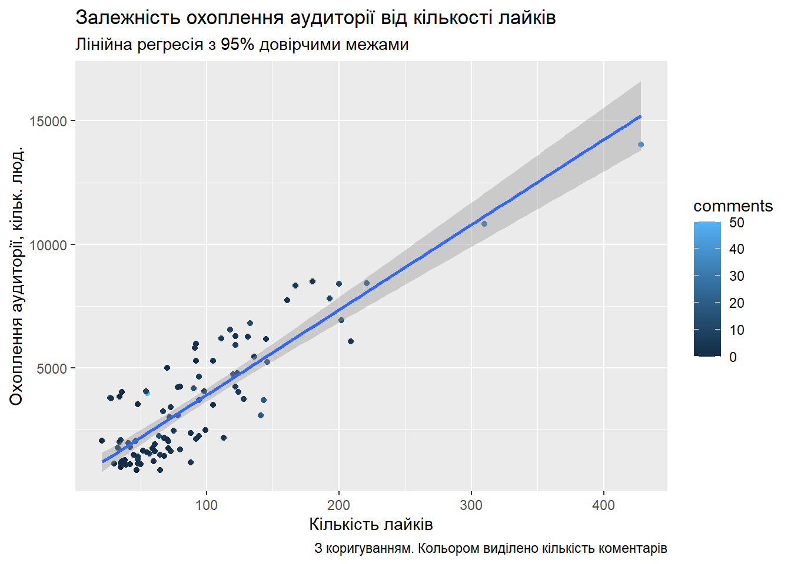
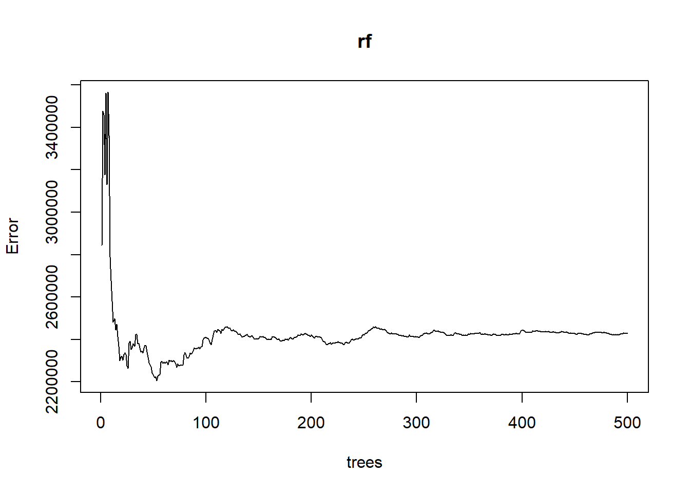

Розділ 5 Модуль 2. Моделювання. Лабораторна робота №4. Побудова регресійних моделей
Мета: Засвоєння базових принципів, знайомство з інструментами та набуття навичок побудови моделей регресії на рівні технології на основи статистичного підходу та моделей машинного навчання засобами мови програмування R та колекції пакетів dplyr, ggplot2.
5.1 Що ви будете вміти?
- будувати моделі парної і багатовимірної лінійної та нелінійної регресії на основі статистичних моделей та моделей машинного навчання засобами мови R у середовищі IDE RStudio.
5.2 Короткі теоретичні відомості
У рамках життєвого циклу процесу Data Mining згідно з методологією CRISP DM (wikipedia 2022a), наступною за фазою “Підготовка даних” (Data Preparing) є фаза “Моделювання” (Modelling) (рис. 1).
Фаза моделювання призначена для вибору оптимального методу побудови моделей і настроювання його параметрів для отримання оптимальних рішень. На даній фазі вирішуються наступні задачі:
- вибір методу моделювання;
- генерація тестового проекту;
- створення моделей;
- оцінка моделей.
Згідно з класичним розумінням технологія Data Mining передбачає побудову моделей, які можна віднести до одного з п’яти основних класів: кластеризація (сегментація) та аналіз відхилень, регресія, класифікація, пошук асоціативних правил та аналіз послідовних шаблонів.

Рис. 1. Задача моделювання у складі Data Science-проекту
Задача сегментації та аналізу відхилень розглядалася нами як складова розвідувального аналізу даних (лаб. роб. №3) у рамках базового модулю.
У рамках даного модулю буде розглянуто решту моделей. Дана лабораторна робота присвячена регресійному аналізу. Побудова моделей класифікації розглядатиметься у наступній лабораторній роботі.
5.2.1 Що таке регресія і регресійний аналіз?
Регресія і класифікація
Між задачею класифікації і регресії існує багато спільного і в самому загальному вигляді їх можна розглядати як одну. Вона може бути сформульована наступим чином: припустимо, що об’єкт, який нас цікавить, описується вектором \(n\) незалежних змінних \(X_1, X_2, \dots, X_n\), які називаються предикторами. Існує деяка величина \(Y\), яка також характеризує досліджуваний об’єкт, але залежить від \(X_1, X_2, \dots, X_n\). Ми маємо колекцію наборів спостережень незалежних змінних у вигляді матриці \(X\) та залежної змінної у вигляді вектора відгуків \(Y\):
\[X=\begin{bmatrix}
x_{11} & x_{12} & \cdots & x_{1,n} \\
x_{21} & x_{22} & \cdots & x_{2,n} \\
\vdots & \vdots & \ddots & \cdots \\
x_{n1} & x_{n2} & \cdots & x_{n,n} \\
\end{bmatrix},\]
та
\[Y=\begin{bmatrix}
y_1 \\
y_2 \\
\vdots \\
y_n
\end{bmatrix}.\]
На основі інформації, яку несуть в собі наявні значення \(X\) та \(Y\) необхідно побудувати модель, яка буде передбачати значення відгуку \(y^*\) для будь-якого заданого набору незалежних змінних \(x^*_1, x^*_2, \dots, x^*_n\)
Відмінність полягає у наступному (рис. 1): якщо значення відгуку носять дискретний характер, говорять про задачу класифікації, якщо неперервний – має місце задача регресії.
Рис. 1. Ілюстрація задач класифікації і регресії (Viacheslav Oreshkov 2012)
Таким чином логічно припустити, що і з точки зору математичного апарату і алгоритмів, що його реалізують при розв’язанні задач регресії і класифікації, має бути багато спільного, але, звичайно, мають бути і відмінності.
У даній лабораторні роботі розглядаються методи і засоби регресійного аналізу.
5.2.2 Формальна постановка задачі регресії
З точки зору параметричного підходу задача регресії полягає у побудові моделі функціональної залежності математичного сподівання відгуку \(Y\) за допомогою невідомої функції регресії \(f(\dots)\) з використанням навчальної вибірки:
\[E(Y|x_1, x_2, ..., x_n)=f(
\beta, x_1, x_2, ..., x_n) + \epsilon,\]
де залишки \(\epsilon\) відображають похибку моделі, тобто непояснену випадкову варіацію спостережуваних значень залежної змінної відносно очікуваного середнього значення. Такий підхід називається статистичним.
Однак далеко не завжди можливо підібрати адекватну функцію регресії за умови великої кількості предикторів та(або) за умови складного характеру самої регресійної залежності. Тому на даний час добре вивчені і широко поширені моделі регресії на основі машинного навчання, які дозволяють розв’язувати цю проблему.
У роботі (Manuel Fernandez-Delgado 2014) автори дослідили широке коло існуючих моделей класифікації і зробили висновок стосовно чьотирьох класів моделей, які мають найбільшу точність:
* Випадковий ліс” (Random Forest);
* Машини опорних векторів (Support Vector Machines);
* Штучні нейронні мережі (Artificial Neural Networks);
* Бустінгові ансамблі моделей (Boosting Ensembles).
Однак автори слушно зауважують, що, “перелічені методи практично непридатні для інтерпретації механізмів явища, яке прогнозується, що викликало ряд критичних зауважень.” На підтвердження даної думки можна навести той факт, що тема моделей, що можуть бути пояснені (Explainable artificial intelligence) наразі є найгорячишою темою дискусій у професійному середовищі аналітиків даних.
Досвід показує, що в тих випадках, коли кількість предикторів є невеликою і залежність є незанадто складною, параметричні методи дозволяють побудувати адекватну модель з високою прогностичною силою, яка одночасно дозволяє і легку інтерпретацію поведінки об’єкта, що вивчається.
Нижче розглядається статистичний підхід на основі методу найменших кравдратів (МНК) і підхід на основі машинного навчання на прикладі випадкових лісів.
5.2.3 Статистичний підхід
Будемо використовувати матричний підхід.
Модель лінійної за параметрами регресії у матричній формі має вигляд:
\[Y=X\beta+\epsilon.\]
На практиці ми шукаємо оцінку даного рівнняння:
\[\hat{Y}=Xb,\]
де \(b=\begin{bmatrix} b_0 \\ b_1 \\ \vdots \\ b_k \end{bmatrix}\).
На практиці маємо матрицю спостережень предикторів \(X\) та вектор відгуків \(Y\). Введемо вектор залишків \(\epsilon\):
\[\epsilon=\begin{bmatrix} \epsilon_1\\ \epsilon_2\\ \vdots \\ \epsilon_n\\ \end{bmatrix},\]
де \[\epsilon=Y - \hat{Y} = Y - Xb.\] Відомо, що суть МНК полягає в отриманні оцінок вектора \(b\) з умови мінімізації суми квадратів залишків: \[U(b) = \epsilon^T \epsilon = (Y - Xb)^T (Y - Xb) \rightarrow min. \] Виконавши диференціювання по параметру \(b\) і прирівнявши похідну до нуля, отримаємо нормальні рівння:
\[X^TXb = X^TY,\]
розв’язок яких відносно параметра \(b\) дає нам МНК-оцінку вектору коеффіцієнтів моделі \(\beta\):
\[b=(X^TX)^{-1}X^TY.\]
Приклад. Припустимо, що випадкова величина \(X\) – зріст дорослої людини (см), а \(Y\) – вага її тіла (кг). Ми виконали \(n=4\) спостереженнь зросту і ваги випадкових перехожих і хочемо побудувати модель парної лінійної регресії \(y=\beta_0 + \beta_1 + \epsilon.\) Для цьго необхідно знайти оцінку рівняння регресії \(\hat y = b_0 + b_1x\), попередньо знайшовши МНК-оцінку вектору коефіцієнтів \(b \sim \beta\). Запишемо наші дані у матричному вигляді: \[X=\begin{bmatrix} 1 & 155 \\ 1 & 198 \\ 1 & 164 \\ 1 & 178 \\ \end{bmatrix}, Y=\begin{bmatrix} 60 \\ 101 \\ 61 \\ 85 \\ \end{bmatrix}.\]
Важливо зауважити, що для реалізації МНК у матричній формі матриця \(X\) має бути модифікована шляхом додавання одиничного стовпчика зліва.
Підставимо наші дані у формулу МНК-оцінки: \[b=(X^TX)^{-1}X^TY= \Bigg( \begin{bmatrix} 1 & 1 & 1 & 1 \\ 155 & 198 & 164 & 178 \\ \end{bmatrix} \begin{bmatrix} 1 & 155 \\ 1 & 198 \\ 1 & 164 \\ 1 & 178 \\ \end{bmatrix}\Bigg )^{-1} \begin{bmatrix} 1 & 1 & 1 & 1 \\ 155 & 198 & 164 & 178 \\ \end{bmatrix} \begin{bmatrix} 60 \\ 101 \\ 61 \\ 85 \\ \end{bmatrix} = \begin{bmatrix} -103.272\\ 1.036 \end{bmatrix} \]
Засобами пакета Matrix можна провести аналогфчні обчислення і отримати аналогічний результат.
library(Matrix)##
## Attaching package: 'Matrix'## The following objects are masked from 'package:wrapr':
##
## pack, unpack## The following objects are masked from 'package:tidyr':
##
## expand, pack, unpackX <- matrix(c(1, 155, 1, 198, 1, 164, 1, 178), nrow = 4, ncol = 2, byrow = TRUE)
Y <- c(60, 101, 61, 85)
b <- solve((t(X) %*% X)) %*% t(X) %*% Y
b## [,1]
## [1,] -103.271669
## [2,] 1.036096Побудуємо лінію регресії, скориставшись стандартними засобами мови R.
plot(X[, 2], Y,
main = "Лінія регресії",
xlab = "x, см",
ylab = "y, кг"
)
abline(a = b[1], b = b[2], col = "blue")
З графіка видно, що лінія регресії адекватно відображає динаміку “хмари” точок. Однак наступним і важливим етапом є перевірка адекватності моделі. У середовищі R існує велика кількість спеціалізованих засобів, які дозволяють реалізувати різні статистичні методи побудови моделей регресії, зокрема на основі МНК, і перевірити їх адекватність (див. Приклад виконання індивідуального завдання).
5.3 Приклад виконання індивідуального завдання
Задача: оцінити охоплення аудиторії у Facebook за відомими показниками likes/shares/comments
5.3.1 Розуміння даних
Первиниий збір даних
Маємо набір даних, котрий містить вибірку об’’мe \(n=99\) статистичних даних залежності охоплення (розміру) аудиторії публічного акаунта і реакціями аудиторії на конкретні публікації (табл. 1).
Опис даних
Таблиця 1. Структура початкових статистичних даних
| Характеристика | Позначення, тип | Кодовое значення |
|---|---|---|
| номер публікації (Первинний ключ) | \(№\), ціле | posts |
| кількість коментарів до даної публікаії | \(x_1\), ціле | comments |
| кількість лайків до даної публікації | \(x_2\), ціле | likes |
| кількість перепостів до даної публікації | \(x_3\), ціле | shares |
| сумарна реакція | \(x_{123}=\sum_\limits{i=1}^3x_i\), ціле | all reactions |
| охоплення аудиторії | \(y\), ціле | reach |
Изучение данных и проверка качества данных
| posts | comments | likes | shares | all reactions | reach |
|---|---|---|---|---|---|
| 1 | 0 | 35 | 6 | 41 | 3847 |
| 2 | 1 | 34 | 1 | 36 | 1775 |
| 3 | 8 | 36 | 10 | 54 | 2074 |
| 4 | 3 | 69 | 19 | 91 | 2149 |
| 5 | 0 | 36 | 6 | 42 | 993 |
| 6 | 0 | 49 | 11 | 60 | 1406 |
Кількість даних є малим для побудови адекватної прогнозної моделі, однак, як буде показано нижче, зважаючи на наявність високої кореляції між предикторами і відгуком може бути запропонований до розгляду ряд моделей,які показують обнадійливі результати і на наявних статистичних даних і в перспективі можуть бути перенавчені на нових даних.
5.3.2 Підготовка даних
Дані комплектні, не вимагають траснформаціі і дозволяють перейти безпосередньо до фази побудови моделі.
5.3.3 Моделювання
“Не следует множить сущее без необходимости” (William of Ockham)
Вибір методу моделювання
Побудова моделі прогнозування охоплення аудиторії являє собою задачу регресійного аналізу, яку в термінах прийнятих позначень (див. Табл. 1) формально можна записати в такий спосіб: необхідно знайти оцінку функції (параметричних або непараметрическим способом) \(y = f (x_1, x_2, x_3)\), що дозволяє прогнозувати значення кількісної змінної \(y\) від набору незалежних змінних \(x_1, x_2, x_3\).
З огляду на, що незалежні змінні і відгук мають числову природу, доцільно в якості основи параметричного підходу взяти класичну статистичну модель багатовимірної лінійної регресії на основі методу найменших квадратів (МНК). Підстави – легка інтерпретація коефіцієнтів моделі.
Є підстави припускати, що в рамках даного завдання в перспективі дані можуть мати сегментированную структуру, організовувати гомогенні групи, тому доцільно пошукати альтернативний варіант серед непараметричних моделей на основі машинного навчання. Наприклад, на основі нейромереж або random forest. Для такого роду ситуацій найкращим чином (за даними літературних джерел і, зокрема, особистого досвіду автора) підходить модель регресії на основі random forest, яка, на відміну, наприклад, від нейромереж і SVM-моделей добре працює без попередньої сегментаціі вибіркових даних.
З урахуванням вищесказаного і на підставі [результатів] (documents / recognize.rtf) розвідувального аналізу даних, виконаного в середовищі Statgraphics (статпроект [тут] (documents / recognize.sgp)), для вирішення завдання можна запропонувати до розгляду наступні моделі (в першому наближенні):
Модель множинної лінійної регресії (multiple regression) на основі МНК (Ordinary Least Squares, OLS): \(y = \beta_0 + \beta_1x_1 + \beta_2x_2 + \beta_3x_3)\); в разі необхідності зниження розмірності - покрокова регресія або регресія на головні компоненти (Principal Component Regression);
Модель парної (Simple regression) лінеарізуемой нелінійної регресії на основі МНК (Squared-Y): \(y = \sqrt {\beta_0 + \beta_1x_2}\);
модель парной линеаризуемой нелинейной регресии на основе МНК (Squared-Y): \(y=\sqrt{\beta_0+\beta_1x_{123}}\);
Модель множинної регресії \(y = f (x_1, x_2, x_3)\) на основі випадкового лісу (\(random \; forest\)).
Генерація тестового проекту, створення моделей і їх оценка
Досліджуємо таблицю багатовимірних вибіркових даних, обчисливши оцінку коефіцієнта кореляції Пірсона і побудувавши кореляційні поля (див.нижче).
data %>%
select(comments:shares, `all reactions`, reach) %>%
cor() %>%
knitr::kable(caption = "Таблица оценок коэффициентов корреляции")| comments | likes | shares | all reactions | reach | |
|---|---|---|---|---|---|
| comments | 1.0000000 | 0.5388672 | 0.5359562 | 0.6134934 | 0.3788963 |
| likes | 0.5388672 | 1.0000000 | 0.8467100 | 0.9864025 | 0.6056677 |
| shares | 0.5359562 | 0.8467100 | 1.0000000 | 0.9137529 | 0.5321415 |
| all reactions | 0.6134934 | 0.9864025 | 0.9137529 | 1.0000000 | 0.6068925 |
| reach | 0.3788963 | 0.6056677 | 0.5321415 | 0.6068925 | 1.0000000 |
data %>%
select(comments:shares, reach) %>%
ggpairs()
Що ми бачимо?
Відгук
reachмає позитивну кореляцію середньої степені з кажною з трьох вхідних змінних:comments: 0.3788963
likes: 0.6056677shares: 0.5321415
Всі три незалежні змінні мають середню і високу ступінь кореляції між собою, що говорить про наявність мультиколінеарності:
comments-likes: 0.5388672
comments-shares: 0.5359562likes-shares: 0.84671
Розподілу незалежних змінних і відгуку мають позитивну асиметрію, про що говорить наявність правого хвоста.
Дані мають викиди (outliers), які одночасно є і впливовими точками (influential points), тобто виключення або включення їх в модель істотно впливає на її параметри.
Що це означає?
- Є підстави вважати, що змінні
comments,likes,sharesвпливають на охоплення аудиторіїreachі можуть виступати в якості незалежних змінних при побудові прогнозної моделі. (Це добре) - Наявність мультиколінеарності говорить про те, що лінійна модель прогнозування $ y = f (x_1, x_2, x_3) $ буде неадекватною, при цьому система незалежних змінних надлишкова і вимагає застосування процедур щодо зниження розмірності. (Це не дуже добре)
- Позитивна асиметрія розподілів змінних викликана наявністю викидів вправо. Це ще один факт на користь того, що лінійні моделі регресії можуть бути неадекватні. Якщо таке трапиться, то вихід може бути, наприклад, таким - вирівнювання розподілів за допомогою логарифмічних або статечних функцій з подальшим застосуванням лінійного МНК (лінеаризація моделі). (Це не дуже добре)
- Наявність впливових точок - серйозна проблема, особливо в нашому випадку - вибірка мала і тому при проведенні семплірованія для перевірки стійкості оцінок коефіцієнтів моделей це може створювати проблеми. (Це погано) Тим не менш, є міркування, що деякі впливові точки доцільно включати в модель (див. Нижче).
Модель множественной линейной регресии (multiple regression) на основе МНК (Ordinary Least Squares, OLS): \(y=\beta_0+\beta_1x_1+\beta_2x_2+\beta_3x_3)\) с пошаговой процедурой
Построим модель линейной регресии дя всех точек. Видно, что точки с номерами \(40\) и \(94\) не вписываются в общую картину, поэтому мы их исключаем и проводим повторную оценку коэффициентов модели.
dataNotFilter <- select(data, comments:shares, reach)
lm.reach <- lm(reach ~ ., data = dataNotFilter)
summary(lm.reach)##
## Call:
## lm(formula = reach ~ ., data = dataNotFilter)
##
## Residuals:
## Min 1Q Median 3Q Max
## -2918.0 -1211.7 -681.9 742.7 22858.1
##
## Coefficients:
## Estimate Std. Error t value Pr(>|t|)
## (Intercept) 799.215 543.557 1.470 0.14477
## comments 33.522 48.010 0.698 0.48674
## likes 30.974 9.146 3.386 0.00103 **
## shares 8.243 26.163 0.315 0.75341
## ---
## Signif. codes: 0 '***' 0.001 '**' 0.01 '*' 0.05 '.' 0.1 ' ' 1
##
## Residual standard error: 2947 on 95 degrees of freedom
## Multiple R-squared: 0.3714, Adjusted R-squared: 0.3515
## F-statistic: 18.71 on 3 and 95 DF, p-value: 1.288e-09plot(lm.reach)


Исключаем выбросы и повторно проводим построение модели регресии.
dataFilter <- data %>%
filter(posts %in% c(40, 94) != TRUE) %>%
select(comments:shares, reach)
lm.reach <- lm(reach ~ ., data = dataFilter)
summary(lm.reach)##
## Call:
## lm(formula = reach ~ ., data = dataFilter)
##
## Residuals:
## Min 1Q Median 3Q Max
## -2723.9 -864.7 -298.1 791.8 4406.8
##
## Coefficients:
## Estimate Std. Error t value Pr(>|t|)
## (Intercept) 513.996 255.442 2.012 0.0471 *
## comments 33.922 22.166 1.530 0.1293
## likes 35.854 4.383 8.181 1.42e-12 ***
## shares -14.299 12.357 -1.157 0.2502
## ---
## Signif. codes: 0 '***' 0.001 '**' 0.01 '*' 0.05 '.' 0.1 ' ' 1
##
## Residual standard error: 1360 on 93 degrees of freedom
## Multiple R-squared: 0.71, Adjusted R-squared: 0.7006
## F-statistic: 75.9 on 3 and 93 DF, p-value: < 2.2e-16plot(lm.reach)

 

Результаты регрессионного анализа показывают следующее:
- Регрессия имеет место с коэффициентом детерминации \(R^2=\) 0.7100008. То есть модель способна объяснить изменчивость отклика на 71.0000847 \(\%\), говоря простыми словами, модель “хороша” на столько же процентов.
- Все коэффициенты, кроме
likesявляются незначимыми, что говорит о наличии мультиколлинеарности и о том, что из трех независимых переменных именно количество лайков наиболее сильно коррелирует с откликом. Значимость свободного члена (\(b_0\)) на пределе, что намекает на необходимость попытки построить модель без константы.
Выход – снижение размерности и повторное построение модели. Для снижения размерности модели и, соответственно, устранении мультиколлинеарности, воспользуемся пошаговой процедурой включения с исключением слабых предикторов ( Forward Stepwise Selection ).
lmStep.reach <- step(lm.reach, trace = 0)
summary(lmStep.reach)##
## Call:
## lm(formula = reach ~ likes, data = dataFilter)
##
## Residuals:
## Min 1Q Median 3Q Max
## -2412.1 -939.7 -296.1 964.5 4733.7
##
## Coefficients:
## Estimate Std. Error t value Pr(>|t|)
## (Intercept) 579.535 249.338 2.324 0.0222 *
## likes 33.759 2.267 14.893 <2e-16 ***
## ---
## Signif. codes: 0 '***' 0.001 '**' 0.01 '*' 0.05 '.' 0.1 ' ' 1
##
## Residual standard error: 1369 on 95 degrees of freedom
## Multiple R-squared: 0.7001, Adjusted R-squared: 0.697
## F-statistic: 221.8 on 1 and 95 DF, p-value: < 2.2e-16Видно, что в результате пошаговой регресии мы получили простую модель парной регресии в виде \(y=f(x_2)\) практически без уменьшения ее точности, что и подтверждает сравнительный дисперсионный анализ двух моделей – \(y=b_0+b_1x_1+b_2x_2+b_3x_3\) и \(y=b_0+b_1x_2\):
anova(lm.reach, lmStep.reach)## Analysis of Variance Table
##
## Model 1: reach ~ comments + likes + shares
## Model 2: reach ~ likes
## Res.Df RSS Df Sum of Sq F Pr(>F)
## 1 93 172115572
## 2 95 177969257 -2 -5853685 1.5815 0.2112Выполним тестирование двух моделей с использованием десятикратной перекрестной проверки (cross validation).
lm.reach.cv <- train(reach ~ ., data = dataFilter, method = 'lm', trainControl = trainControl(method = "cv"))lmStep.reach.cv <- train(reach ~ likes, data = dataFilter, method = 'lm', trainControl = trainControl(method = "cv"))lm.reach.cv## Linear Regression
##
## 97 samples
## 3 predictor
##
## No pre-processing
## Resampling: Bootstrapped (25 reps)
## Summary of sample sizes: 97, 97, 97, 97, 97, 97, ...
## Resampling results:
##
## RMSE Rsquared MAE
## 1431.513 0.693207 1171.929
##
## Tuning parameter 'intercept' was held constant at a value of TRUElmStep.reach.cv## Linear Regression
##
## 97 samples
## 1 predictor
##
## No pre-processing
## Resampling: Bootstrapped (25 reps)
## Summary of sample sizes: 97, 97, 97, 97, 97, 97, ...
## Resampling results:
##
## RMSE Rsquared MAE
## 1369.626 0.717183 1143.97
##
## Tuning parameter 'intercept' was held constant at a value of TRUEКак видно из результатов простая модель линейной регресии имеет меньшую ошибку (RMSE), чем модель множественной регресии, хотя наблюдается небольшое снижение (на 2%) коэффициента детерминации у второй модели. Но, как показывает проведенный выше дисперсионный анализ, это незначимо. Данную модель можно улучшить, исключив константу из спецификации модели, то есть получить модель в виде \(y=b_1x_2\):
lm.MinusConst.reach <- lm(reach ~ likes - 1, data = dataFilter)
summary(lm.MinusConst.reach)##
## Call:
## lm(formula = reach ~ likes - 1, data = dataFilter)
##
## Residuals:
## Min 1Q Median 3Q Max
## -2342.9 -734.5 -194.9 1198.5 5037.6
##
## Coefficients:
## Estimate Std. Error t value Pr(>|t|)
## likes 38.133 1.292 29.51 <2e-16 ***
## ---
## Signif. codes: 0 '***' 0.001 '**' 0.01 '*' 0.05 '.' 0.1 ' ' 1
##
## Residual standard error: 1400 on 96 degrees of freedom
## Multiple R-squared: 0.9007, Adjusted R-squared: 0.8997
## F-statistic: 871.1 on 1 and 96 DF, p-value: < 2.2e-16plot(lm.MinusConst.reach)

 

ggplot(dataFilter,
aes(x = likes - 1, y = reach,
colour = comments)) +
labs(title = "Зависимость охвата аудитории от количества лайков",
subtitle = "Линейная регрессия с 95%-ными доверительными границами",
caption = "Без корректировки. Цветом выделено количество комеентариев",
x = "Количество лайков", y = "Охват аудитории, кол. чел.") +
geom_point() +
stat_smooth(method=lm, se = TRUE, fullrange = TRUE) ## `geom_smooth()` using formula 'y ~ x'
Исходя их правила “Три сигма,” для корректировки линейной модели целесообразно удаление еще двух точек (11, 24).
dataFilterThreeSigma <- data %>%
filter(posts %in% c(11, 24, 40, 94) != TRUE) %>% # указываем номера точек, которые должны быть исключены
select(comments:shares, reach)Строим модель.
lm.MinusConstThreeSigma.reach <- lm(reach ~ likes - 1, data = dataFilterThreeSigma)
summary(lm.MinusConstThreeSigma.reach)##
## Call:
## lm(formula = reach ~ likes - 1, data = dataFilterThreeSigma)
##
## Residuals:
## Min 1Q Median 3Q Max
## -2278.4 -700.1 -191.1 1124.8 2725.0
##
## Coefficients:
## Estimate Std. Error t value Pr(>|t|)
## likes 37.679 1.166 32.31 <2e-16 ***
## ---
## Signif. codes: 0 '***' 0.001 '**' 0.01 '*' 0.05 '.' 0.1 ' ' 1
##
## Residual standard error: 1259 on 94 degrees of freedom
## Multiple R-squared: 0.9174, Adjusted R-squared: 0.9165
## F-statistic: 1044 on 1 and 94 DF, p-value: < 2.2e-16# plot(lm.MinusConst.reach)Строим график.
ggplot(dataFilterThreeSigma,
aes(x = likes - 1, y = reach,
colour = comments)) +
labs(title = "Зависимость охвата аудитории от количества лайков",
subtitle = "Линейная регрессия с 95%-ными доверительными границами",
caption = "С корректировкой. Цветом выделено количество комментариев",
x = "Количество лайков", y = "Охват аудитории, кол. чел.") +
geom_point() +
stat_smooth(method=lm, se = TRUE, fullrange = TRUE) ## `geom_smooth()` using formula 'y ~ x'
Что имеем и как с этим работать?
Уравнение модели: \(y=\) 37.6789647 \(\cdot x_2\) Имеем предельно простую и легко интерпретируемую модель: среди двух публикаций, у одной из которых всего лишь на один лайк больше, в среднем на 37 просмотров больше аудитория.
Регрессия имеет место с коэффициентом детерминации \(R^2=\) 0.9174168. То есть модель способна объяснить изменчивость отклика на 91.7416806 \(\%\), говоря простыми словами, модель “хороша” на столько же процентов.
Серая зона на графике показывает надежную зону регрессии – нижнюю и верхнюю \(95\%\)-юю границу прогноза для среднего количества лайков. Считается она так:
likesNumber <- data.frame(likes=c(200, 250, 255)) # указываем значения likes для вычисления прогноза по reaches
pre <- predict(lm.MinusConstThreeSigma.reach, likesNumber, interval="confidence")
knitr::kable(cbind(likesNumber, pre),
caption = "Точечный и интервальный прогноз охвата аудитории")| likes | fit | lwr | upr |
|---|---|---|---|
| 200 | 7535.793 | 7072.770 | 7998.816 |
| 250 | 9419.741 | 8840.962 | 9998.520 |
| 255 | 9608.136 | 9017.782 | 10198.490 |
Например, если публикация набрала \(200\) лайков, то модель с надежностью не хуже, чем \(95\%\) гарантирует, что охват аудитории в среднем 7535, но не менее, чем 7072, но и не более, чем 7998.
Об остальных альтернативных моделях
Относительно заявленных в начале альтернативных нелинейных моделях:
модель парной (Simple regression) линеаризуемой нелинейной регресии на основе МНК (Squared-Y): \(y=\sqrt{\beta_0+\beta_1x_2}\);
модель парной линеаризуемой нелинейной регресии на основе МНК (Squared-Y): \(y=\sqrt{\beta_0+\beta_1x_{123}}\);
Как показали исследования, данные модели несущественно отличаются по точности от предложенной линейной модели с одним предиктором likes, поэтому нет никаких оснований выдвигать их в качестве достойной альтернативы.
Адекватную прогнозную модель на основе случайных лесов (\(random \; forest\)) даже в рабочем варианте на малой выборке меньше 100 строить нецелесообразно. При увеличении данных хотя бы на порядок и при наличии зависимостей, отличных от линейной, данный подход может дать интересные и неплохие результаты.
Выводы
На основании представленных статистических данных построен прототип модели прогнозирования охвата аудитории на основании количества лайков
likes. Данная зависимость адекватно описывается простой линейной зависимостью (см. выше) и позволяет сделать точечный и интервальный прогноз с надежностью \(95\%\) (вероятностью \(0,95\)) охвата аудитории. Включение двух других параметровcommensиsharesв прогнозную модель нецелесообразно – качество модели не улучшается, а точность прогноза ухудшается.Ряд предложенных альтернативных нелинейные моделей не дал существенного улучшения качества зависимости. Хотя есть основания считать, что зависимость охвата аудитории носит нелинейных характер от количества реакции пользователей сети, в частности, количества лайков, который проявляется на больших значениях независимой переменной (переменных). Представленные заказчиком данные не позволяют утвердительно ответить на данный вопрос.
Целесообразно увеличение объема выборочных данных хотя бы на порядок для проверки адекватности и возможного переобучения полученной модели или построения более сложных зависимостей.
Главный вывод – в любом случае перспективы хорошие ввиду сильных корреляций между реакциями пользователей и охватом аудитории.
p. s.
По желанию заказчика для возможности исследования возможного влияния на отклик исключенных из рассмотрения предикторов comments и sharesна новых данных к рассмотрению предлагается две следующие модели, учитывающие влияние всех трех переменных (целесообразность исключения констант обоснована в данном отчете выше):
Модель с исключенной константой: \(y=b_1x_1+b_2x_2+b_3x_3\)
Обобщенная модель регрессии с эффектами взаимодействия второго порядка с исключенной константой (изначально предлагаемая заказчиком): \(y=b_1x_1+b_2x_2+b_3x_3+b_{12}x_1x_2+b_{13}x_1x_3+b_{23}x_2x_3\) (такой подход к моделированию считается неудачным с точки зрения задачи экстраполяции, т. е. собственно прогнозирования. Оправдан для задач интерполяции)
Строим первую модель:
lm.reach <- lm(reach ~ comments + likes + shares - 1, data = dataFilterThreeSigma)
summary(lm.reach)##
## Call:
## lm(formula = reach ~ comments + likes + shares - 1, data = dataFilterThreeSigma)
##
## Residuals:
## Min 1Q Median 3Q Max
## -2659.5 -709.1 -156.7 1012.0 2952.8
##
## Coefficients:
## Estimate Std. Error t value Pr(>|t|)
## comments 22.16 20.61 1.075 0.2851
## likes 41.43 3.18 13.028 <2e-16 ***
## shares -19.58 11.01 -1.778 0.0787 .
## ---
## Signif. codes: 0 '***' 0.001 '**' 0.01 '*' 0.05 '.' 0.1 ' ' 1
##
## Residual standard error: 1248 on 92 degrees of freedom
## Multiple R-squared: 0.9207, Adjusted R-squared: 0.9181
## F-statistic: 355.9 on 3 and 92 DF, p-value: < 2.2e-16# plot(lm.reach)Как анализировать полученную таблицу при исследовании на новых данных?
- Смотрим на
Coefficients: если видим в колонке \(Pr(>|t|)\) значение больше, чем \(0,05\), то о коэффициент, которому оно соответствует, в модель не включается – такой коэффициент статистически незначим с заданной наперед надежностью \(\alpha=0,05\). Т. е., формально модель имеет вид: \(y=\) 22.1566353 \(\cdot x_1+\) 41.4335882 \(\cdot x_2+\) -19.5814839 \(\cdot x_3\), но фактически (в данном конкретном случае!): \(y=\) 41.4335882 \(\cdot x_2\). Для прогнозирования или проверки качества прогноза на тестовых данных следует брать только фактическую модель. Незначимые коэффициенты должны считаться равными нулю и включение их в модель только ухудшает точность прогноза, внося как случайную, так и систематическую погрешность. - Смотрим на оценку коэффициента детерминации:
Multiple R-squared, т. е. какой процент изменчивости отклика объясняет данная модель. В нашем случае это: \(R^2=\) 0.9206595. То есть модель способна объяснить изменчивость отклика на 92.0659531 \(\%\), говоря простыми словами, модель “хороша” на столько же процентов.
Строим вторую модель.
lm.general.reach <- lm(reach ~ comments + likes + shares + comments*likes + comments*shares + likes*shares - 1, data = dataFilterThreeSigma)
summary(lm.general.reach)##
## Call:
## lm(formula = reach ~ comments + likes + shares + comments * likes +
## comments * shares + likes * shares - 1, data = dataFilterThreeSigma)
##
## Residuals:
## Min 1Q Median 3Q Max
## -2489.7 -809.4 -117.0 849.7 2788.9
##
## Coefficients:
## Estimate Std. Error t value Pr(>|t|)
## comments 64.65151 39.07336 1.655 0.102
## likes 43.79321 5.09790 8.590 2.64e-13 ***
## shares -25.09527 20.59867 -1.218 0.226
## comments:likes -0.66600 0.36319 -1.834 0.070 .
## comments:shares 0.68694 1.53120 0.449 0.655
## likes:shares 0.04449 0.13098 0.340 0.735
## ---
## Signif. codes: 0 '***' 0.001 '**' 0.01 '*' 0.05 '.' 0.1 ' ' 1
##
## Residual standard error: 1225 on 89 degrees of freedom
## Multiple R-squared: 0.926, Adjusted R-squared: 0.921
## F-statistic: 185.5 on 6 and 89 DF, p-value: < 2.2e-16# plot(lm.reach)Как анализировать полученную таблицу при исследовании на новых данных?
- Смотрим на
Coefficients: если видим в колонке \(Pr(>|t|)\) значение больше, чем \(0,05\), то о коэффициент, которому оно соответствует, в модель не включается – такой коэффициент статистически незначим с заданной наперед надежностью \(\alpha=0,05\). Т. е., формально модель имеет вид: \(y=\) 64.6515059 \(\cdot x_1+\) 43.7932086 \(\cdot x_2+\) -25.0952651 \(\cdot x_3+\) -0.6659987 \(\cdot x_1 x_2+\) 0.6869435 \(\cdot x_1 x_3+\) 0.0444853 \(\cdot x_2 x_3\), но фактически (в данном конкретном случае!): \(y=\) 43.7932086 \(\cdot x_2\). Для прогнозирования или проверки качества прогноза на тестовых данных следует брать только фактическую модель. Незначимые коэффициенты должны считаться равными нулю и включение их в модель только ухудшает точность прогноза, внося как случайную, так и систематическую погрешность. - Смотрим на оценку коэффициента детерминации:
Multiple R-squared, т. е. какой процент изменчивости отклика объясняет данная модель. В нашем случае это: \(R^2=\) 0.9259555. То есть модель способна объяснить изменчивость отклика на 92.5955527 \(\%\), говоря простыми словами, модель “хороша” на столько же процентов.
В нашем случае видим, что две данные модели свелись к полученной ранее однофакторной модели зависимости охвата аудитории исключительно от значений likes. При исследовании новых данных, характер которых будет отличен от рассматриваемых, ситуация может измениться.
Построение модели random forest.
head(dataFilterThreeSigma)## comments likes shares reach
## 1 0 35 6 3847
## 2 1 34 1 1775
## 3 8 36 10 2074
## 4 3 69 19 2149
## 5 0 36 6 993
## 6 0 49 11 1406# 80% данных используем для тренировки модели, 20% для тестирования
split <- sample(2, nrow(dataFilterThreeSigma), replace=TRUE, prob=c(0.8, 0.2))
train <- dataFilterThreeSigma[split==1,]
test <- dataFilterThreeSigma[split==2,]
# Построение модели
# rf <- randomForest(reach ~ ., data = train)
rf <- randomForest(reach ~ ., data = train, scale=FALSE, ntree=500)
rf##
## Call:
## randomForest(formula = reach ~ ., data = train, scale = FALSE, ntree = 500)
## Type of random forest: regression
## Number of trees: 500
## No. of variables tried at each split: 1
##
## Mean of squared residuals: 2527440
## % Var explained: 55.48# Построение прогноза на тестовой выборке
predictions <- predict(rf, test)
# Ошибка прогноза
print(sqrt(sum((as.vector(predictions - test$reach))^2))/length(predictions))## [1] 381.0602# График ошибки прогноза
plot(rf)
# Оценка важности предикторов
importance(rf)## IncNodePurity
## comments 94643224
## likes 176372511
## shares 122965070Зауваження.1